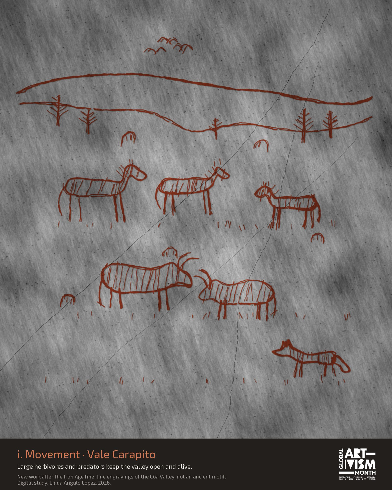
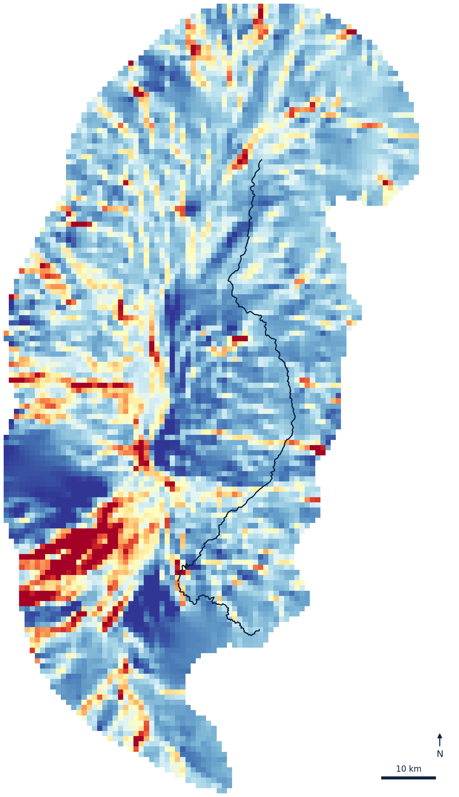
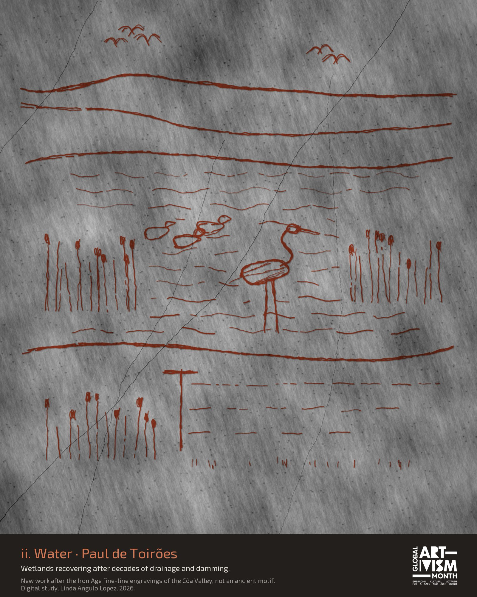
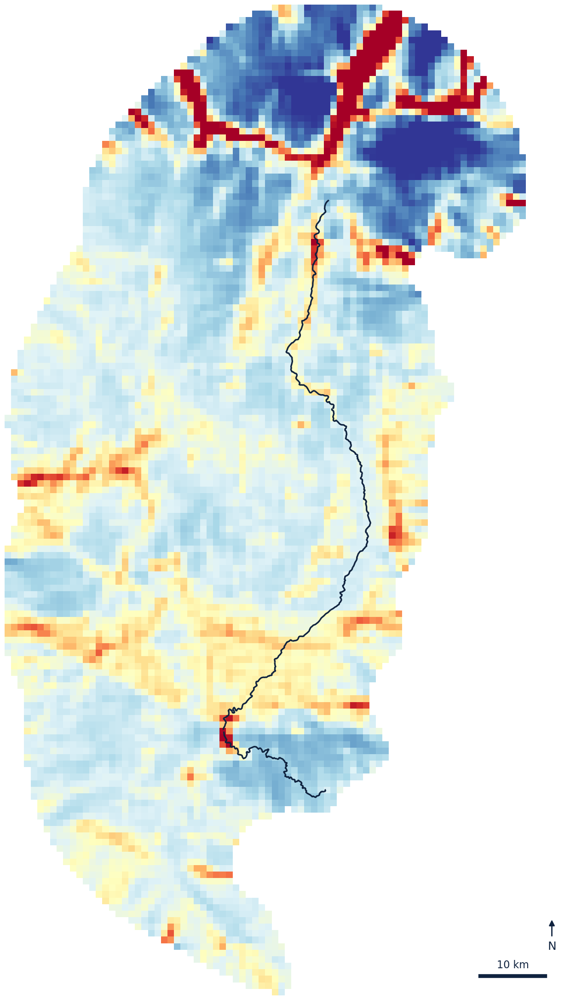
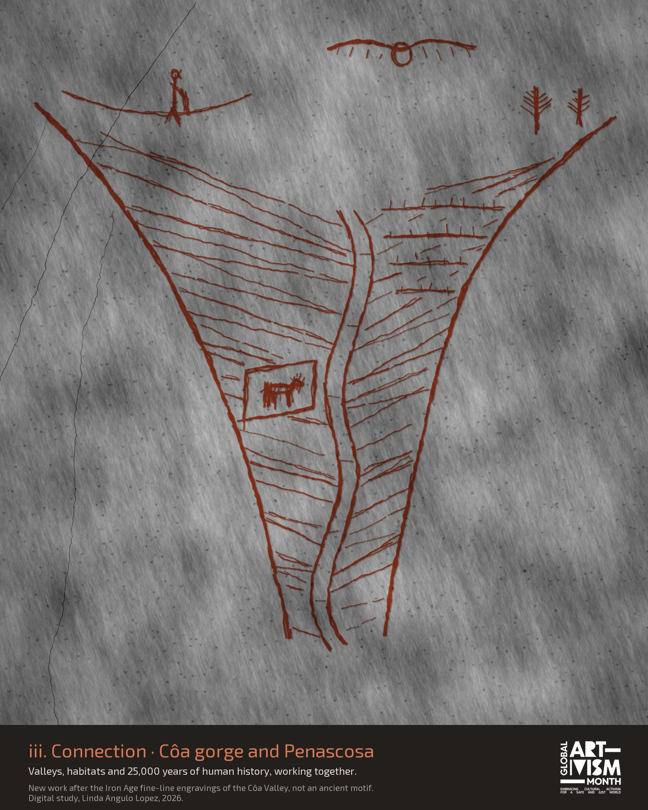
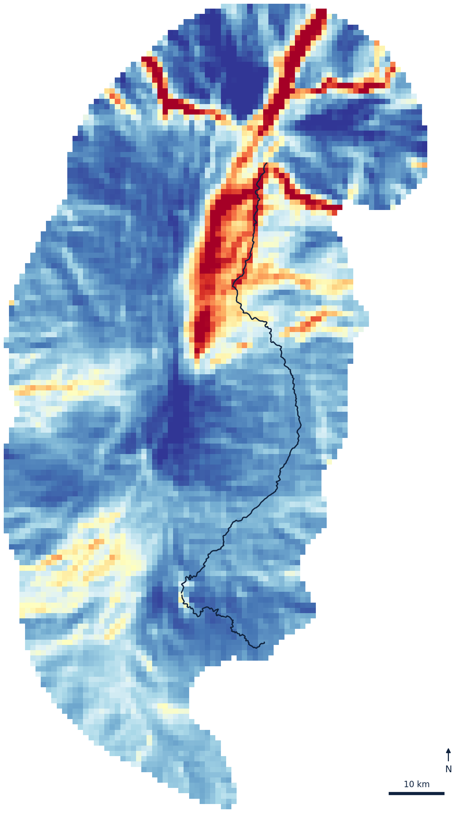

Movement, Water, Connection
Field illustration and GIS maps from the Côa Valley, Portugal. Drawings made on the ground and connectivity maps modelled from open data, read side by side.
Ilustração de campo e mapas SIG do Vale do Côa, Portugal. Desenhos feitos no terreno e mapas de conectividade modelados a partir de dados abertos, lidos lado a lado.
Illustration de terrain et cartes SIG de la vallée du Côa, au Portugal. Des dessins faits sur place et des cartes de connectivité modélisées à partir de données ouvertes, lus côte à côte.
The work
A obra
L'œuvre
- Title
- Título
- Titre
- Movement, Water, Connection: field notes and maps from the Côa Valley
- Credit
- Crédito
- Crédit
- Linda Angulo Lopez, coa-connectivity-lab
- Year and place
- Ano e local
- Année et lieu
- 2026, Greater Côa Valley, Portugal
- 2026, Grande Vale do Côa, Portugal
- 2026, grande vallée du Côa, Portugal
- Medium
- Técnica
- Médium
- Illustration and digital GIS maps
- Ilustração e mapas SIG digitais
- Illustration et cartes SIG numériques
- About
- Sobre
- Propos
- Where can a wolf, an otter or a seed still move through a valley shaped by dams, roads and fire? The drawings answer from the ground, the maps from the data.
- Por onde podem ainda passar um lobo, uma lontra ou uma semente num vale marcado por barragens, estradas e fogo? Os desenhos respondem a partir do terreno, os mapas a partir dos dados.
- Par où un loup, une loutre ou une graine peuvent-ils encore passer dans une vallée façonnée par les barrages, les routes et le feu ? Les dessins répondent depuis le terrain, les cartes depuis les données.
i. Movement
i. Movimento
i. Mouvement
Large herbivores and predators keep the valley open and alive.
Grandes herbívoros e predadores mantêm o vale aberto e vivo.
Les grands herbivores et les prédateurs gardent la vallée ouverte et vivante.

Plate in progressHerbivores at Vale Carapito Prancha em curso
Herbívoros em Vale Carapito Planche en cours
Herbivores à Vale Carapito

ii. Water
ii. Água
ii. Eau
Wetlands recovering after decades of drainage and damming.
Zonas húmidas a recuperar após décadas de drenagem e barragens.
Des zones humides qui se rétablissent après des décennies de drainage et de barrages.

Plate in progressPaul de Toirões wetland Prancha em curso
Paul de Toirões Planche en cours
Zone humide de Paul de Toirões

iii. Connection
iii. Ligação
iii. Lien
Valleys, habitats and 25,000 years of human history, working together.
Vales, habitats e 25 000 anos de história humana, a funcionar em conjunto.
Vallées, habitats et 25 000 ans d'histoire humaine, qui fonctionnent ensemble.

Plate in progressCôa gorge and Penascosa rock art Prancha em curso
Garganta do Côa e gravuras da Penascosa Planche en cours
Gorges du Côa et gravures de Penascosa

Where the drawings were made
Onde os desenhos foram feitos
Où les dessins ont été faits
Twenty field sites visited in August 2026, from the source of the Côa at Fóios to Faia Brava. Species records are not shown, to protect sensitive animals.
Vinte locais visitados em agosto de 2026, da nascente do Côa, em Fóios, até à Faia Brava. Os registos de espécies não são mostrados, para proteger animais sensíveis.
Vingt sites visités en août 2026, de la source du Côa à Fóios jusqu'à Faia Brava. Les observations d'espèces ne sont pas affichées, pour protéger les animaux sensibles.
Supporting studies
Estudos de apoio
Études préparatoires
Why draw and map the same valley
Porquê desenhar e mapear o mesmo vale
Pourquoi dessiner et cartographier la même vallée
I spent August 2026 walking and drawing the Côa, from its source at Fóios to the rock art at Penascosa, while modelling how animals might move across the same ground. The two methods correct each other. (i) Drawing slows the eye down, so it catches what the model misses: a new fence, a dry pool, a stone bridge an otter still uses. (ii) The map shows what one walker cannot see: the pinch points where a single new road would cut a corridor. (iii) Together they make an argument for restoration that people living in the valley can read, and challenge.
The maps are models, not counts. They show where movement is likely to concentrate, not where anyone has seen a wolf.
"Safe and just" did not start as a scientific framework. It comes from Indigenous Science and community-led climate justice (Jessica Hernandez, Fresh Banana Leaves, 2022), and was only later put into numbers by the Earth Commission (Rockström, Gupta et al., Nature, 2023). I grew up on South Africa's Wild Coast and worked on land restoration there after apartheid, and I read this valley from that starting point. A corridor that works for wildlife is half the job. The other half is who gets to use it, and who decides.
Who draws the map of your valley, and who is missing from the room when it is drawn?
Passei agosto de 2026 a percorrer e a desenhar o Côa, da nascente em Fóios às gravuras da Penascosa, enquanto modelava a forma como os animais se podem deslocar pelo mesmo território. Os dois métodos corrigem-se um ao outro. (i) O desenho abranda o olhar e capta o que o modelo não vê: uma vedação nova, uma charca seca, uma ponte de pedra que uma lontra ainda usa. (ii) O mapa mostra o que quem caminha não consegue ver: os pontos de estrangulamento onde uma única estrada nova cortaria um corredor. (iii) Juntos, formam um argumento a favor do restauro que quem vive no vale pode ler e contestar.
Os mapas são modelos, não contagens. Mostram onde é provável que o movimento se concentre, não onde alguém viu um lobo.
"Seguro e justo" não nasceu como um quadro científico. Vem da Ciência Indígena e da justiça climática liderada por comunidades (Jessica Hernandez, Fresh Banana Leaves, 2022), e só mais tarde foi quantificado pela Earth Commission (Rockström, Gupta et al., Nature, 2023). Cresci na Wild Coast, na África do Sul, e trabalhei ali em restauro de terras depois do apartheid; é desse ponto de partida que leio este vale. Um corredor que funciona para a vida selvagem é metade do trabalho. A outra metade é saber quem o pode usar, e quem decide.
Quem desenha o mapa do seu vale, e quem falta na sala quando ele é desenhado?
J'ai passé août 2026 à parcourir et dessiner le Côa, de sa source à Fóios jusqu'aux gravures de Penascosa, tout en modélisant la façon dont les animaux peuvent traverser ce même territoire. Les deux méthodes se corrigent l'une l'autre. (i) Le dessin ralentit le regard et saisit ce que le modèle ne voit pas : une clôture neuve, une mare asséchée, un pont de pierre qu'une loutre emprunte encore. (ii) La carte montre ce qu'un marcheur seul ne peut pas voir : les points de pincement où une seule route nouvelle couperait un corridor. (iii) Ensemble, ils forment un argument en faveur de la restauration que les habitants de la vallée peuvent lire, et contester.
Les cartes sont des modèles, pas des comptages. Elles montrent où le mouvement a des chances de se concentrer, pas où quelqu'un a vu un loup.
« Sûr et juste » n'est pas né comme un cadre scientifique. L'idée vient des sciences autochtones et de la justice climatique portée par les communautés (Jessica Hernandez, Fresh Banana Leaves, 2022), et n'a été chiffrée que plus tard par la Earth Commission (Rockström, Gupta et al., Nature, 2023). J'ai grandi sur la Wild Coast, en Afrique du Sud, et j'y ai travaillé à la restauration des terres après l'apartheid ; c'est depuis ce point de départ que je lis cette vallée. Un corridor qui fonctionne pour la faune, c'est la moitié du travail. L'autre moitié, c'est qui peut l'utiliser, et qui décide.
Qui dessine la carte de votre vallée, et qui manque dans la salle quand elle est dessinée ?
Join the Côa call
Junte-se à chamada do Côa
Rejoindre l'appel du Côa
An open invitation to illustrators, field-notebook keepers, ecologists, farmers and anyone who lives near the Côa, or cares about a river of their own. You do not need experience, funding or to travel.
Um convite aberto a ilustradores, a quem mantém cadernos de campo, ecólogos, agricultores e a quem vive perto do Côa, ou se preocupa com um rio seu. Não é preciso experiência, financiamento nem viajar.
Une invitation ouverte aux illustrateurs, aux tenants de carnets de terrain, aux écologues, aux agriculteurs et à toute personne qui vit près du Côa, ou qui tient à sa propre rivière. Pas besoin d'expérience, de financement ni de voyager.
Witness
Testemunhar
Témoigner
Follow the month and share the weekly posts with your own networks.
Acompanhe o mês e partilhe as publicações semanais nas suas redes.
Suivez le mois et partagez les publications hebdomadaires dans vos réseaux.
Contribute one page
Contribuir com uma página
Contribuer une page
One place, one species, one sentence. Pencil, watercolour, phone photo or a map, from the field or from home.
Um lugar, uma espécie, uma frase. Lápis, aguarela, fotografia de telemóvel ou um mapa, no campo ou em casa.
Un lieu, une espèce, une phrase. Crayon, aquarelle, photo au téléphone ou carte, sur le terrain ou chez vous.
Co-create
Cocriar
Co-créer
Add your page to a shared map and zine of the Côa corridor, published on Human Rights Day.
Junte a sua página a um mapa e a um zine coletivos do corredor do Côa, publicados no Dia dos Direitos Humanos.
Ajoutez votre page à une carte et un fanzine collectifs du corridor du Côa, publiés le jour des droits de l'homme.
| 6 to 23 October | 6 a 23 de outubro | 6 au 23 octobre | Sign-up open | Inscrições abertas | Inscriptions ouvertes |
|---|---|---|---|---|---|
| 26 October | 26 de outubro | 26 octobre | Welcome pack and a short online kick-off | Kit de boas-vindas e uma curta sessão de arranque online | Kit de bienvenue et courte réunion de lancement en ligne |
| 1 November | 1 de novembro | 1er novembre | The month opens. A new prompt every Monday, a round-up every Friday | Abertura do mês. Um novo tema cada segunda-feira, um resumo cada sexta-feira | Ouverture du mois. Une nouvelle consigne chaque lundi, un récapitulatif chaque vendredi |
| 10 December | 10 de dezembro | 10 décembre | Human Rights Day. Closing gallery and zine | Dia dos Direitos Humanos. Galeria e zine de encerramento | Journée des droits de l'homme. Galerie et fanzine de clôture |
How to join
Como participar
Comment participer
Introduce yourself in the project discussion: your name, your place, and which of the three ways you would like to take part.
Apresente-se na discussão do projeto: o seu nome, o seu lugar e qual das três formas de participação prefere.
Présentez-vous dans la discussion du projet : votre nom, votre lieu, et laquelle des trois façons de participer vous intéresse.
No GitHub account? A photo of a paper page is enough. A contact that does not need an account will be added here before sign-up opens on 6 October.
Não tem conta no GitHub? Uma fotografia de uma página em papel basta. Um contacto que não exige conta será indicado aqui antes da abertura das inscrições, a 6 de outubro.
Pas de compte GitHub ? Une photo d'une page papier suffit. Un contact ne nécessitant pas de compte sera indiqué ici avant l'ouverture des inscriptions, le 6 octobre.
Rights and consent
Direitos e consentimento
Droits et consentement
(i) You keep the rights to your work. (ii) Pages are shared under CC BY-NC 4.0 unless you ask otherwise. (iii) Inclusion in the printed zine is opt-in. (iv) Do not show people, or exact locations of sensitive species, in ways that could put anyone at risk.
(i) Os direitos da obra são seus. (ii) As páginas são partilhadas sob CC BY-NC 4.0, salvo pedido em contrário. (iii) A inclusão no zine impresso é opcional. (iv) Não mostre pessoas, nem a localização exata de espécies sensíveis, de forma que possa pôr alguém em risco.
(i) Vous gardez les droits sur votre œuvre. (ii) Les pages sont partagées sous CC BY-NC 4.0, sauf demande contraire. (iii) L'inclusion dans le fanzine imprimé se fait sur accord. (iv) Ne montrez pas de personnes, ni la localisation exacte d'espèces sensibles, d'une manière qui pourrait mettre quelqu'un en danger.
This is a locally organised action registered for Global Artivism Month. It is not run by the Global Artivism team.
Esta é uma ação organizada localmente e inscrita no Mês Global do Artivismo. Não é gerida pela equipa do Global Artivism.
Il s'agit d'une action organisée localement et inscrite au Mois mondial de l'artivisme. Elle n'est pas gérée par l'équipe de Global Artivism.